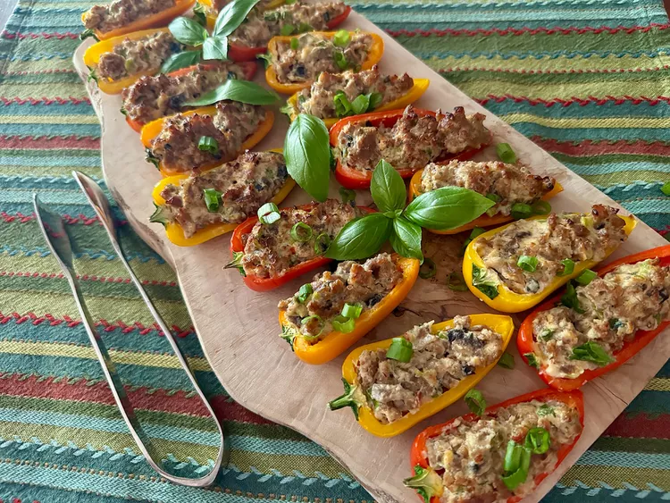

Sausage Stuffed Mini Peppers

Description
These sausage stuffed mini peppers rely on garlic and fine herbs flavor Boursin
cheese and hot Italian sausage. The colorful mini peppers stay nice and crunchy.
Ingredients
- Hot Italian sausage
- Fresh mushrooms
- Red pepper flakes
- Green Onions
- Gournay cheese
- Mini Bell Peppers
- Fresh parsley sprigs/ Basil
Steps
- Crumble sausage into a nonstick skillet over medium heat;
cook and stir for 2 to 3 minutes.
- Add mushrooms, red pepper flakes, and green onions, reserving some green onion
tops.Stir unitl sausage is browned, 3 to 4 more minutes. Drain any excess fat.
- Remove skillet from heat and stir in Boursin until melted and well blended with
other ingredients.
- Fill each pepper half with sausage mixture; place filled peppers on a baking sheet
- Preheat the oven's broiler.
- Broil until filling is lightly browned, about 3 minutes. Place on a serving tray and
sprinkle with reserved green onion tops. Garnish with sprigs of fresh parsley or fresh
basil. Serve warm or at room temperature.